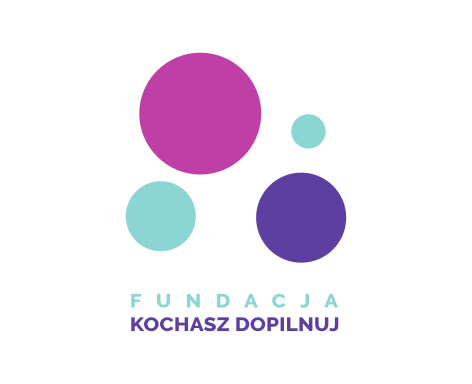

Warsztaty dla szkół i korporacji
Wyrabiaj dobre nawyki od młodości. Organizujemy warsztaty edukacyjne dla szkół średnich oraz firm, ucząc jak ważna jest profilaktyka i regularne badania.
Działamy na rzecz świadomości i profilaktyki chorób nowotworowych w Polsce. Przypominamy, że regularne badania ratują życie.
Działalność Fundacji Kochasz Dopilnuj rozpoczęła ogólnopolska kampania fotograficzna #PomacajSie — cykl czarno-białych zdjęć kobiet doświadczonych rakiem piersi, której celem jest promowanie samobadania i jego znaczenia we wczesnym wykrywaniu raka piersi.
Popularność tej akcji sprawiła, że w marcu 2020 roku stworzyłyśmy fundację Kochasz Dopilnuj. Wszystkie nasze akcje mają na celu przypominanie o regularnych badaniach — poprzez niestandardowe projekty mówimy głośno, że #ProfilaktykaRatujeŻycie.
Jak działamy?Edukacja ma podstawowe znaczenie
Wyrabiaj dobre nawyki od młodości. Organizujemy warsztaty edukacyjne dla szkół średnich oraz firm, ucząc jak ważna jest profilaktyka i regularne badania.
Zdjęcia mówią więcej niż tysiąc słów. Kampania #PomacajSie to cykl czarno-białych zdjęć kobiet doświadczonych rakiem piersi, które poruszają i inspirują.
Moda na profilaktykę. Organizujemy niestandardowe wydarzenia i kampanie, które przyciągają uwagę i zachęcają do działania w niebanalny sposób.
Razem można więcej. Współpracujemy z firmami i korporacjami, które chcą wspierać profilaktykę zdrowotną i angażować swoich pracowników w ważne inicjatywy.
Masz pytania dotyczące naszej działalności, chcesz współpracować lub wesprzeć fundację? Napisz do nas — odpiszemy tak szybko jak to możliwe.
